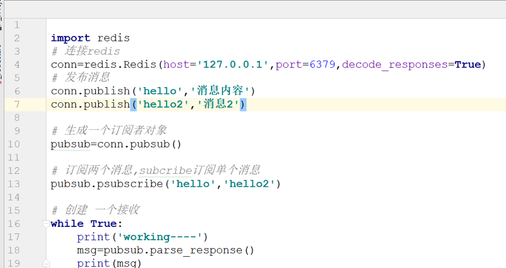

如何基于redis实现发布订阅
什么是发布订阅
一种通信模型,它采用事件作为通信机制,提供大规模系统所要求的松散耦合交互模式,只能消费已订阅的信息
应用场景
公众号,微博,广播
优点
松耦合 可扩展性
缺点
发布者解耦订阅者 浪费内存 观察者与发布订阅模式有什么区别 观察者: 之间有耦合性,松耦合 发布订阅: 没有耦合性,通过第三个中间件进行交互
如何实现
一: subscribe+publish 优点:支持多端订阅,简单,性能高 缺点: 数据会丢失 01 发布消息: publish ‘ ’ 返回值表示接受这条消息的订阅者数量,发出的消息不会持久化,只能接受订阅后的 02 订阅频道: subscribe (‘’),返回值包括客户端订阅的频道,以及接收到的消息 03 取消订阅: UNSUBSCRIBE
发送消息: publish channel:1 hello
案例:
